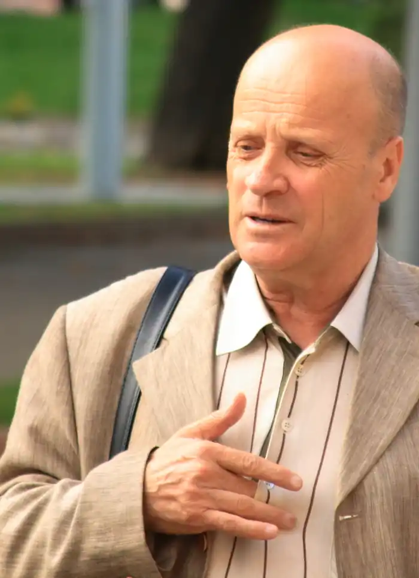
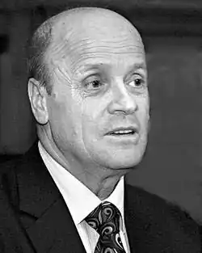
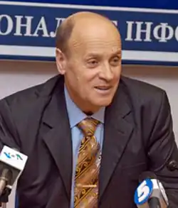

Михайло Федотович Слабошпицький народився 28 липня 1946 року в селі Мар’янівка, Черкаської області —український прозаїк, критик, літературознавець,публіцист, громадський діяч.
Закінчив факультет журналістики Київського університету, працював кореспондентом, був редактором відділу критики газети "Літературна Україна", головним редактором газети "Вісті з України", журналу "Вавилон-XX".
З 1995 року — виконавчий директор Ліги українських меценатів, директор видавництва "Ярославів Вал". Співголова координаційної ради Міжнародного конкурсу знавців української мови імені Петра Яцика. Від 2006 року секретар ради Національної спілки письменників України. Батько кіносценариста й режисера Мирослава Слабошпицького та відомої журналістки Іванни Слабошпицької. Творчість Автор книг "Поет із пекла (Тодось Осьмачка)", "Никифор Дровняк із Криниці", "Веньямін літературної сім’ї (Олекса Влизько)", "З голосу нашої Кліо", "Українські меценати", "Українець, який відмовився бути бідним" (про Петра Яцика), "Пейзаж для Помаранчевої революції", "25 поетів української діаспори", багатьох дитячих оповідань. Його роман "Марія Башкирцева" виходив у перекладах на французьку та російську мови. Автор понад двох десятків книжок для дітей та юнацтва, прози, публіцистики й літературної критики. Остання книга "Що записано в книгу життя. Михайло Коцюбинський та інші" презентована у 2012 році в київській "Книгарні Є". У романі автор розповідає про події початку ХХ століття від імені Михайла Коцюбинського, Володимира Винниченка, Володимира Самійленка та інших постатей. Михайло Слабошпицький писав роман 5 років, матеріали до нього збирав близько 10. Ведучий радіопередач "Екслібрис", "Прем’єра книги", "Нобелівські лауреати", "Літературний профіль". Відзнаки Лауреат Національної премії України імені Тараса Шевченка (2005). Лауреат Літературної премії імені Лесі Українки (1993). Лауреат літературно-мистецької премії імені Олександра Білецького (1979) Лауреат літературної премії імені Олени Пчілки Лауреат літературної премії імені Братів Лепких (1998) Лауреат літературної премії "Берег надії" ім. Василя Симоненка (1999) Лауреат літературної премії "Звук павутинки" ім. Віктора Близнеця (2001) Лауреат літературної премії ім. Михайла Коцюбинського (2003) Лауреат премії імені Івана Багряного (2007)